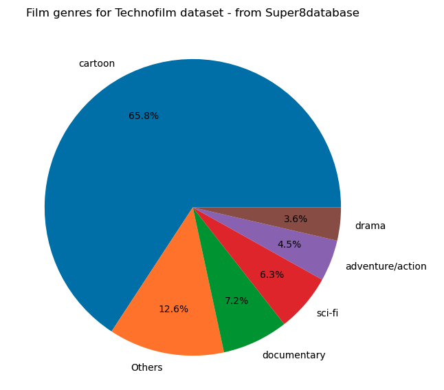
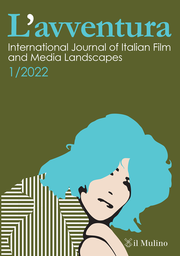

HISTORICAL FILM DATA ANALYSIS PROJECTS

Super 8 Film Piracy in Italy
Analysis of a historical film dataset of confiscated films (ANICA files of 1978). Not published yet [Add publication if needed].

Technofilm Project
Analysis of historical film data exploring Technofilm practices and distribution patterns. Related publication: [Add publication if needed].

Italo Film Analysis
Distribution and circulation of Italian films on Super8 in Germany during the 70s and 80s. Related publication: Italo-Film: The Circulation of Italian Films on Super8 in Germany.